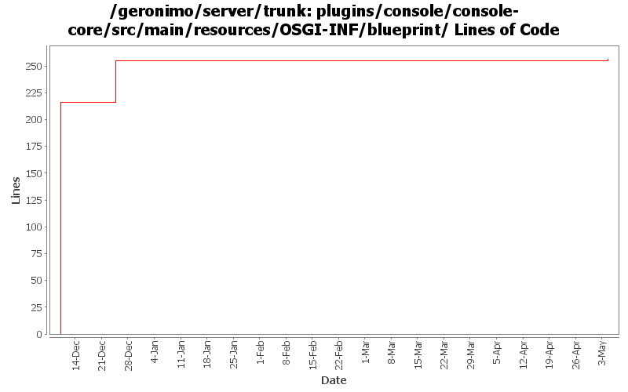

[root]/plugins/console/console-core/src/main/resources/OSGI-INF/blueprint

| Author | Changes | Lines of Code | Lines per Change |
|---|---|---|---|
| Totals | 3 (100.0%) | 266 (100.0%) | 88.6 |
| djencks | 2 (66.7%) | 265 (99.6%) | 132.5 |
| gawor | 1 (33.3%) | 1 (0.4%) | 1.0 |
wait for PortalContainerServices gbean to be initialized (since it is initialized via blueprint)
1 lines of code changed in 1 file:
GERONIMO-4965 update to DI changes in pluto
49 lines of code changed in 1 file:
GERONIMO-4965 Get pluto 2 running as osgi blueprint service. Base console sort of works. Fix a bug in jetty single-bundle-ear support for locating resources
216 lines of code changed in 1 file: